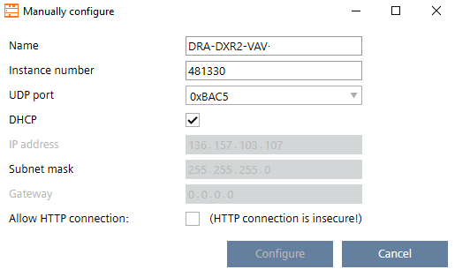

手动配置设备
使用此过程手动配置自动化站。
Manually configure devices
- Connect a device.
Connecting to devices - Open the Startup > Configure and download task.
- In the Discovered devices tab, click Discover.
- Select All or Unconfigured in the Discovery list and click OK.
- Select the DXR2 device to be configured.
- Select Manually configure in the context menu (or Ctrl-M).
- The Manually configure dialog box opens.

- Complete the configuration details and click Configure.
- The configuration is applied to the device and the Message column in the Discovered devices editor is updated.
- Select Go to web interface.
Web interface - Select and activate the Application type.
- Configure the parameters (temperature setpoints, flow setpoints, etc.).

并非所有设备都支持手动配置。